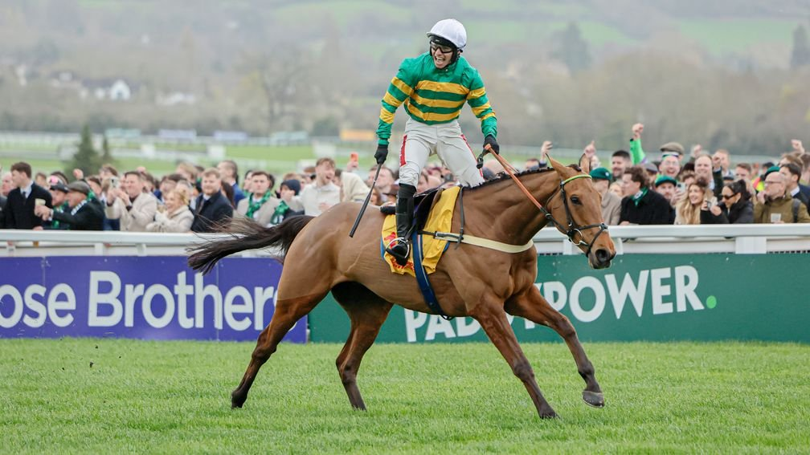

Meetmebythesea encabeza las apuestas entre 41 inscritos para la Paddy Power Gold Cup
El caballo de Ben Pauling abre como favorito a 4-1 para el hándicap de obstáculos de Cheltenham del 14 de noviembre, en el que Dan Skelton cuenta con siete inscritos.

Cheltenham ha cerrado la primera lista de inscripciones de la Paddy Power Gold Cup (Premier Handicap Chase), dotada con 160.000 libras, con 41 caballos. La carrera se disputa el sábado 14 de noviembre a las 14:20, hora local.
La casa de apuestas patrocinadora ha abierto el mercado con Meetmebythesea como favorito a 4-1. El seis años, propiedad de John P. McManus y entrenado por Ben Pauling, conoce ya el recorrido y la distancia: ganó en marzo el hándicap Jack Richards del Festival. Le siguen Blueking d'Oroux (6-1) y Madara (8-1), ambos de Dan Skelton, mientras que Regent's Stroll y Vincenzo cotizan a 10-1 y Here Comes Georgie, Jagwar y Quebecois a 12-1.
Paul Binfield, portavoz de Paddy Power, explicó la elección del favorito: "Meetmebythesea ya ha demostrado su valía en este recorrido y distancia, tras ganar el Jack Richards en el Festival el pasado marzo, y es nuestro claro líder del mercado a 4-1 para dar al entrenador local Ben Pauling su primer triunfo en la Paddy Power Gold Cup".
El equipo de Skelton, que ganó la última edición con Panic Attack, es el que más peso tiene en la lista. A Blueking d'Oroux y Madara se suman Here Comes Georgie, Kingston Narcissus, Kykorock, Matterhorn y Riskintheground. Binfield señaló que Blueking d'Oroux podría reaparecer este fin de semana en Carlisle y recordó que Madara también tiene una victoria en Cheltenham, en el Plate Handicap Chase del último Festival.
Paul Nicholls inscribe a Quebecois, Regent's Stroll y Twinjets. Nigel y Willy Twiston-Davies presentan a Guard Your Dreams, Master Chewy y Matata. McManus, además de Meetmebythesea, tiene a Jagwar, de Oliver Greenall y Josh Guerriero, y a Johnnywho, de Jonjo y A.J. O'Neill. Desde Irlanda figuran July Flower y Zurich, de Henry de Bromhead, e Ifiwerearichman y Release The Beast, de Paul Nolan.
En la parte baja del mercado aparecen Asian Master y Scorsese, ambos a 66-1, y Dunkerque, el más largo, a 100-1. Para las apuestas a colocado, la casa paga un cuarto de la cuota a los cuatro primeros puestos.
Fichas: Jack (caballo)
Por Martín Larrañeta